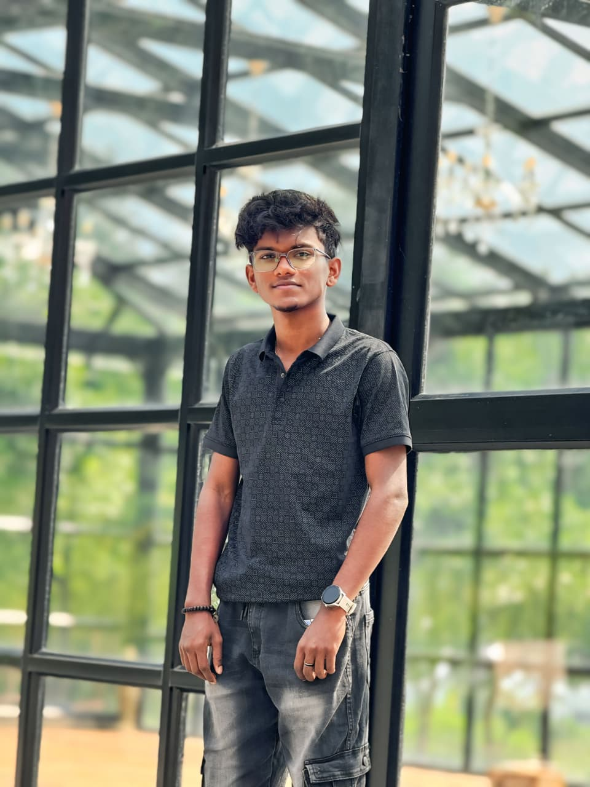
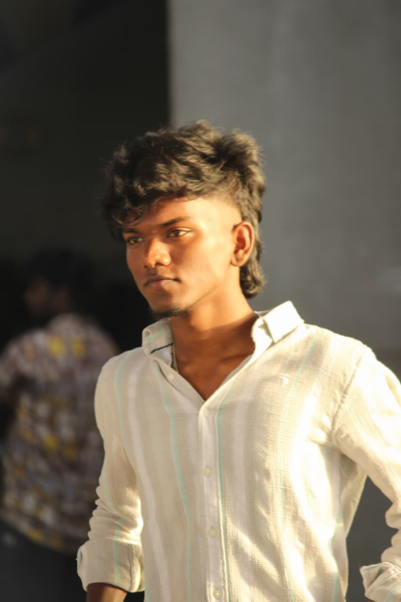
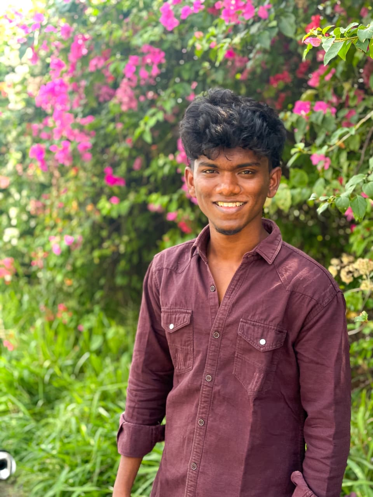
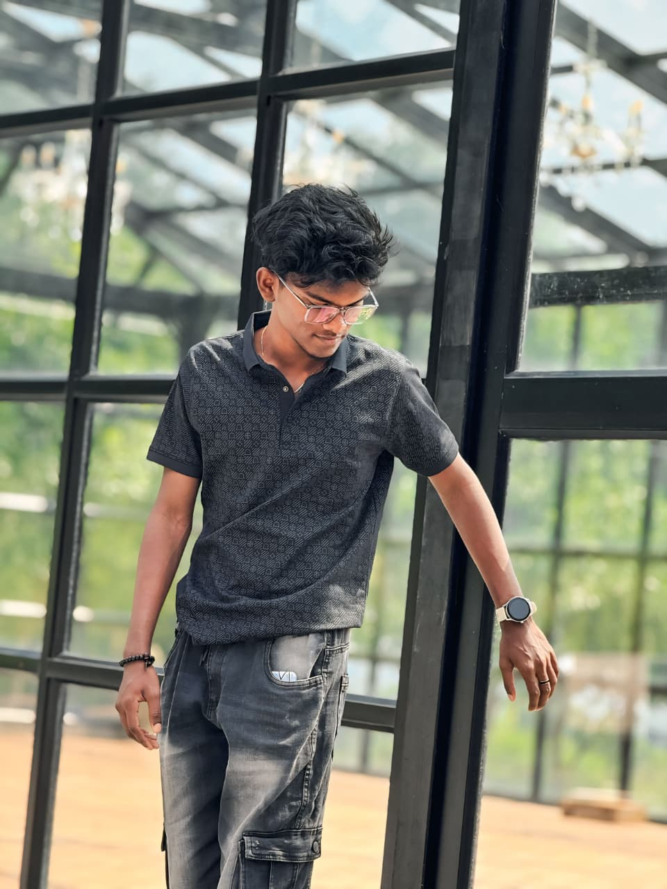
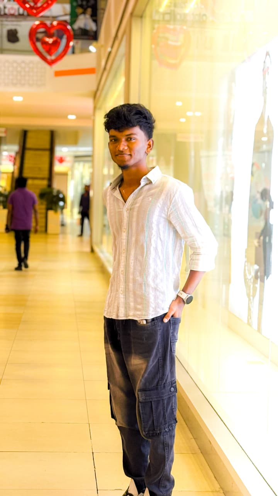
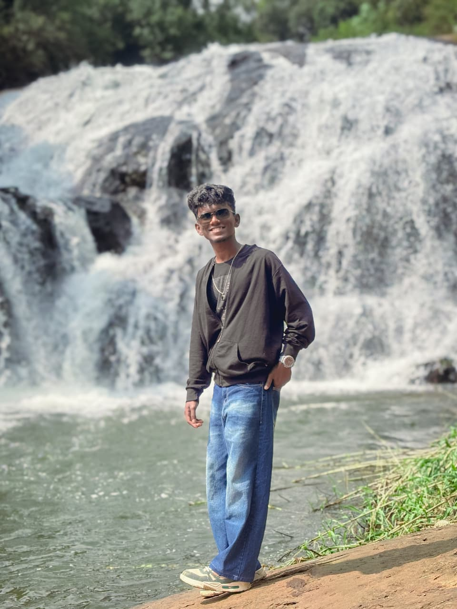

01 / 06
Product & UI/UX Design
Product interfaces, user flows, information hierarchy, and digital experiences.

Hi, I’m Aakash — UI/UX & Product DesignerDesigning smarter digital experiences where product thinking, interaction, and technology come together.
Explore my work across B2B software, digital products, and responsive websites—from collaborative company projects to independently developed design concepts.

I’m Aakash. I bring clarity to complex digital products and care about how every detail feels in use.
SCROLL TO EXPLOREA designer who cares01 — 06
about the details.




I’m Aakash, a Product Designer based in Coimbatore, India. I work on responsive digital products, business software, and interactive web experiences.
My experience includes designing the live FITTEX website, contributing to established ERP interfaces, collaborating on Kamblis and Toodhu, and handling the complete UI/UX design and frontend implementation of NutaLink.
I enjoy bringing structure to complex interfaces, refining interactions, and understanding how designs behave beyond Figma.
Download my résuméCapabilities I use to bring clarity, detail, and function to digital work.
Product interfaces, user flows, information hierarchy, and digital experiences.
Auto Layout, components, prototypes, and reusable interface patterns.
Interactions, states, transitions, and interactive prototypes.
HTML, CSS, JavaScript fundamentals, responsive layouts, and implementation.
AI-assisted prototyping, frontend development, visual production, and design refinement.
Posters, brochures, websites, and creative communication assets.
Designed the live FITTEX website; contributed new and redesigned screens to its existing ERP; co-designed Kamblis and Toodhu; completed NutaLink’s UI/UX design, prototypes, and frontend implementation.
Designed responsive website layouts, product content hierarchy, interface layouts, and visual communication assets.
Worked on responsive web and application interfaces, user flows, wireframes, prototypes, and developer collaboration.
Bachelor of Computer Applications (BCA) · KG College of Arts and Science, Coimbatore
UI/UX Design Professional Course · FITA Academy